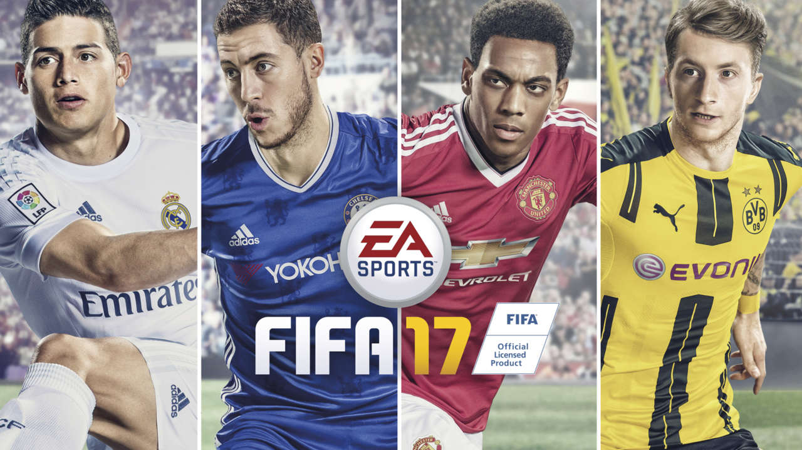
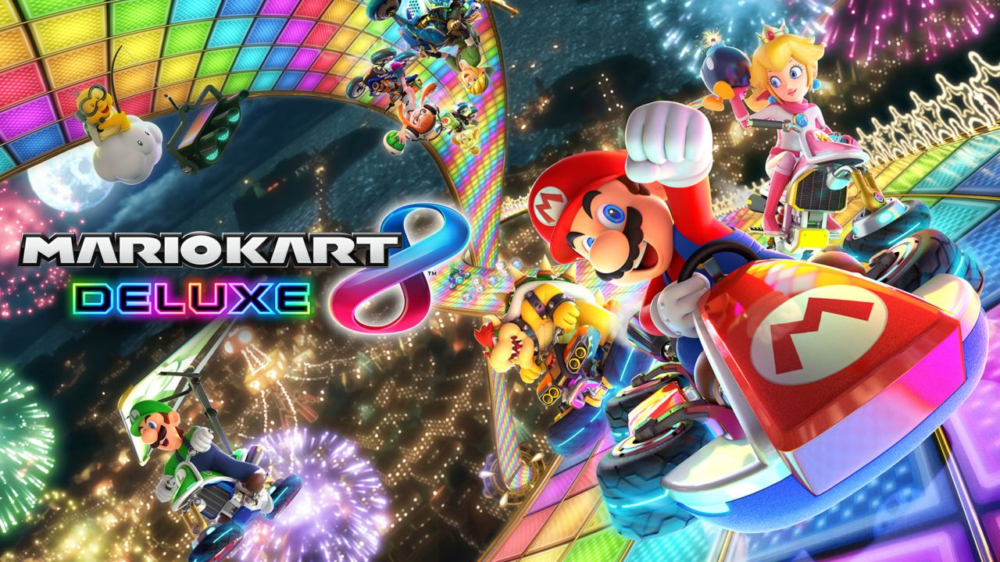
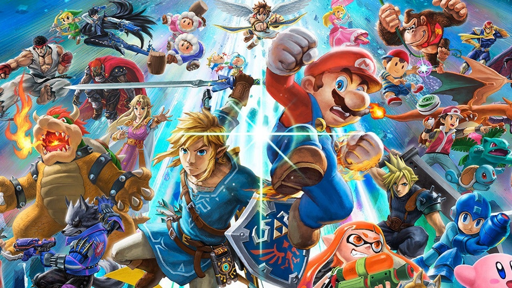
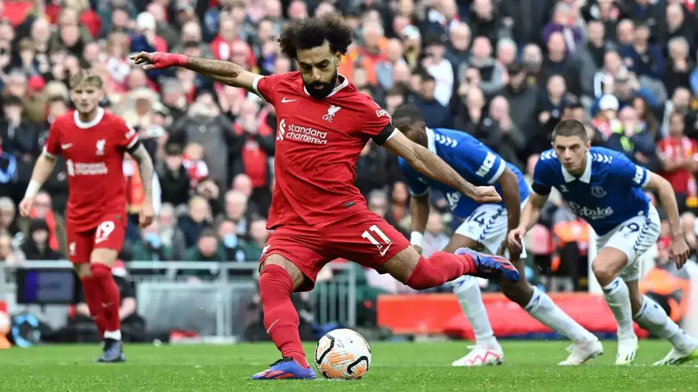

Favourite Games and Sports

- FIFA is a football simulated game video game that
is created by EA Sports. The FIFA franchise is a legendary video game franchise
as the first FIFA game was released in 1993. The game has evolved massively from stunning graphics,
to the groundbreaking game modes such as Ultimate Team and Pro Clubs.
|

- Mario Kart 8 Deluxe is a racing video game that includes all the famous
characters,tracks and items from the Mario franchise. The objective of the game
is like any other racing game which is to come first with using themed power-ups from
the Mario world
|
-
SUPER SMASH BROS ULTIMATE

- Super Smash Bros is a video game franchise that is a fighting
video game that focuses on battling oppenets using the roster of
characters from the Nitendo characters such as Mario, Pikachu and Link
to beat the opponets around you. Super Smash Bros Ultimate is the 6th
installment of the Smash Bros franchise.
|

-
Football is a team sport with the main objective to score goals to win the game againist the
opposition infront of you.
The sport is can be played with how many people but the best amount is 11 people per team.
The sport is the most well known sport in the world and in some parts of the world some
people called soccer.
|